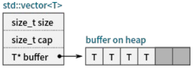
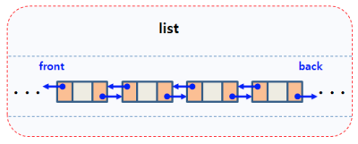
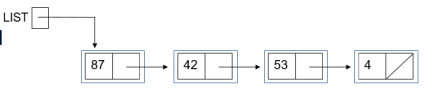

序列容器
- C++ 标准库中提供了多种序列容器模板
array：元素个数固定的序列容器vector：元素连续存储的序列容器forward_list/list：基于链表 / 双向链表的容器deque：vector与list的折中basic_string：提供了对字符串专门的支持
- 需要使用元素类型来实例化容器模板，从而构造可以保存具体类型的容器。
- 不同的容器所提供的接口大致相同，但根据容器性质的差异，其内部实现与复杂度不同。
- 对于复杂度过高的操作，提供相对较难使用的接口或者不提供相应的接口
array 容器模板
- array 容器模板：具有固定长度的容器，其内部维护了一个内建数组，与内建数组相比提供了复制操作
- 提供的接口
- 构造
- 成员类型：
value_type等 - 元素访问：
[]，at，front，back，data - 容量相关（平凡实现）：
empty，size，max_size - 填充与交换：
fill，swap - 比较操作：
<=> - 迭代器
#include <iostream>
#include <array>
#include <type_traits>
int main()
{
std::array<int, 3> a{1, 2, 3};
std::cout <<
std::is_same<std::array<int, 3>::value_type, int>::value
<< std::endl; // 1
for (auto x : a)
{
std::cout << x << std::endl;
}
a.fill(10); // a：10 10 10
std::cout << a.at(10) << std::endl; // 越界程序崩溃
std::cout << a.front() << a.back(); // = a[0] a[2] 10 10
std::array<int, 3> b{4, 5, 6};
// 成本很高
a.swap(b); // a: 4 5 6 b: 10 10 10
}
vector 容器模板
- vector 容器模板：元素可变（图片来源： www.sthu.org ）

提供的接口
- 与
array很类似，但有其特殊性
#include <iostream>
#include <vector>
int main()
{
std::vector<int> a{2};
std::cout << a.size() << ' ' << a.max_size() << std::endl;
// 1 4611686018427387903
std::vector<int> b{1, 1, 3};
std::vector<int> c{1};
std::cout << (a > b) << std::endl; // 1
std::cout << (b > c) << std::endl; // 1
}
- 容量相关接口：
capacity/ reserve / shrink_to_fit
#include <iostream>
#include <vector>
int main()
{
std::vector<int> a;
a.reserve(1024); // 增加 vector 的容量到大于或等于 new_cap 的值
for (int i = 0; i < 1024; ++i)
{
a.push_back(i);
}
a.shrink_to_fit();
}
- 附加元素接口：
push_back/emplace_back - 元素插入接口：
insert/emplace - 元素删除接口：
pop_back/erase/clear
#include <iostream>
#include <vector>
#include <string>
void print_vector_int(const std::vector<int>& v)
{
for (int i : v)
std::cout << i << " ";
std::cout << '\n';
}
int main()
{
std::vector<std::string> a;
a.push_back("hello");
a.emplace_back("world"); // emplace_back 避免用 push_back 时的额外复制或移动操作
std::vector<int> b(3, 100);
auto x = b.begin();
b.insert(x, 200);
print_vector_int(b);
// 200 100 100 100
std::vector<int> c{1, 2, 3, 4 ,5};
c.erase(c.begin() + 1, c.begin() + 2);
print_vector_int(c);
// 1 3 4 5
c.pop_back();
print_vector_int(c);
// 1 3 4
c.clear();
print_vector_int(c); // 已清空
}
注意
vector不提供push_front/pop_front，可以使用insert/erase模拟，但效率不高
在 vector 的头部添加或删除元素是非常消耗性能的！
swap效率较高（这里是指针地址的交换，不是实际的元素交换，所以效率高）
#include <iostream>
#include <vector>
#include <string>
int main()
{
std::vector<int> a{1, 2, 3};
std::vector<int> b{4, 5, 6};
auto ptr = a.begin();
std::cout << *ptr << std::endl; // 1
a.swap(b);
for (auto v : a)
std::cout << v << " "; // 4 5 6
std::cout << *ptr << std::endl; // 1
// 注意交换后迭代器与引用保持与其原来的元素关联，例如指向 'a' 中值为 1 的元素的 ptr 仍指向同一元素，
// 尽管此元素被移动到 'b' 中。
}
- 写操作可能会导致迭代器失效
list 容器模板
list容器模板：双向链表（图片来源： blog.daum.net ）

- 与
vector相比，list- 插入、删除成本较低，但随机访问成本较高
- 提供了
pop_front/splice等接口 - 写操作通常不会改变迭代器的有效性
#include <iostream>
#include <vector>
#include <list>
void printlist(const std::list<int>& l)
{
for (auto ptr = l.begin(); ptr != l.end(); ++ptr)
{
std::cout << *ptr << " ";
}
std::cout << '\n';
}
int main()
{
std::list<int> a{1, 2, 3};
printlist(a);
a.push_front(20); // 在开头插入
a.push_back(10); // 在结尾添加
printlist(a); // 20 1 2 3 10
std::list<int> b{4, 5, 6};
auto it = a.begin();
a.splice(it, b);
printlist(a); // 4 5 6 20 1 2 3 10
a.sort();
printlist(a); // 1 2 3 4 5 6 10 20
a.reverse();
printlist(a); // 20 10 6 5 4 3 2 1
std::list<int> c{1, 2, 2, 3, 3, 4, 6};
c.unique();
printlist(c); // 1 2 3 4 6
}
forward_list 容器模板

forward_list容器模板：单向链表（图片来源： www.usna.edu ）- 目标：一个成本较低的线性表实现
- 其迭代器只支持递增操作，因此无
rbegin/rend - 不支持
size - 不支持
pop_back/push_back XXX_after操作
#include <iostream>
#include <vector>
#include <list>
#include <forward_list>
void printforwardlist(const std::forward_list<int>& l)
{
for (auto ptr = l.begin(); ptr != l.end(); ++ptr)
{
std::cout << *ptr << " ";
}
std::cout << '\n';
}
int main()
{
std::forward_list<int> a{1, 2, 3, 4};
a.insert_after(a.begin(), 100);
printforwardlist(a); // 1 100 2 3 4
a.insert_after(a.begin(), 2 ,100);
printforwardlist(a); // 1 100 100 100 2 3 4
a.pop_front();
printforwardlist(a); // 100 100 100 2 3 4
a.push_front(2);
printforwardlist(a); // 2 100 100 100 2 3 4
a.clear();
}
deque容器模板
deque容器模板：vector与list的折衷push_back/push_front速度较快- 在序列中间插入、删除速度较慢
#include <iostream>
#include <deque>
int main()
{
// 创建容纳整数的 deque
std::deque<int> d = {7, 5, 16, 8};
// 从 deque 的首尾添加整数
d.push_front(13);
d.push_back(25);
// 迭代并打印 deque 的值
for(int n : d)
std::cout << n << ' ';
// 13 7 5 16 8 25
}
basic_string 容器模板
- basic_string 容器模板：实现了字符串相关的接口
- 使用
char实例化出std::string - 提供了如
find，substr等字符串特有的接口 - 提供了数值与字符串转换的接口
- 针对短字符串的优化（ ）
- 使用
#include <iostream>
#include <string>
int main()
{
double f = 23.4;
std::cout << std::to_string(f) << std::endl; // 23.400000
std::string str1 = "45";
std::string str2 = "3.14159";
std::string str3 = "31337 with words";
std::string str4 = "words and 2";
// 错误： 'std::invalid_argument'
// int myint4 = std::stoi(str4);
std::cout << std::stoi(str1) << std::endl; // 45
std::cout << std::stoi(str2) << std::endl; // 3
std::cout << std::stoi(str3) << std::endl; // 31337
}